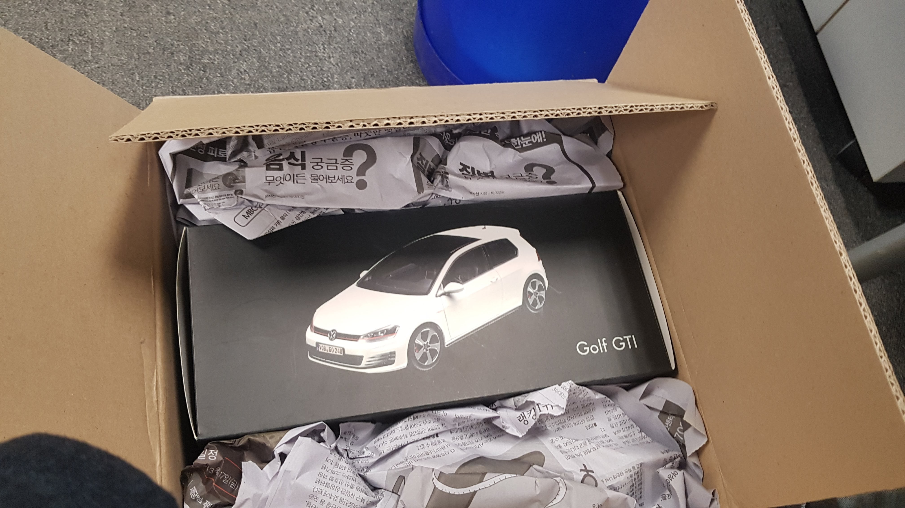
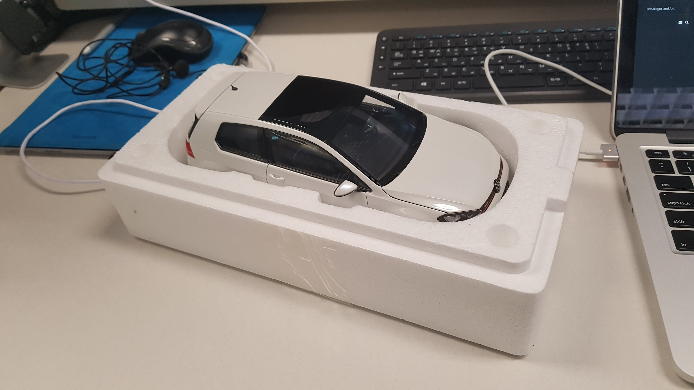
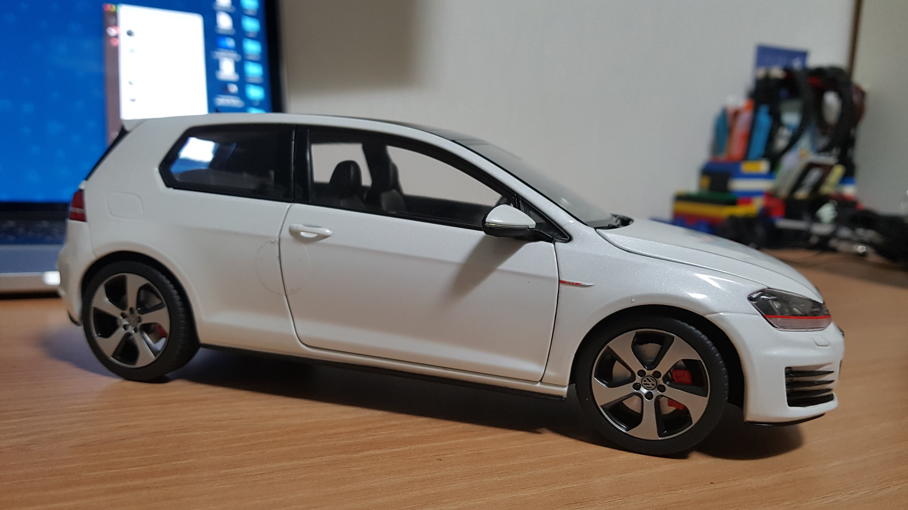
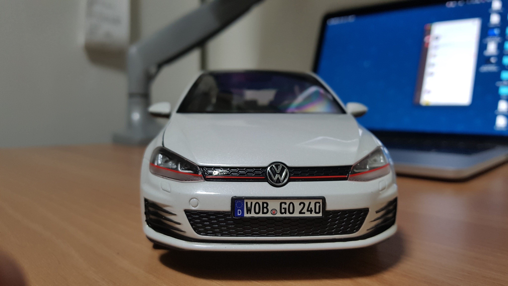
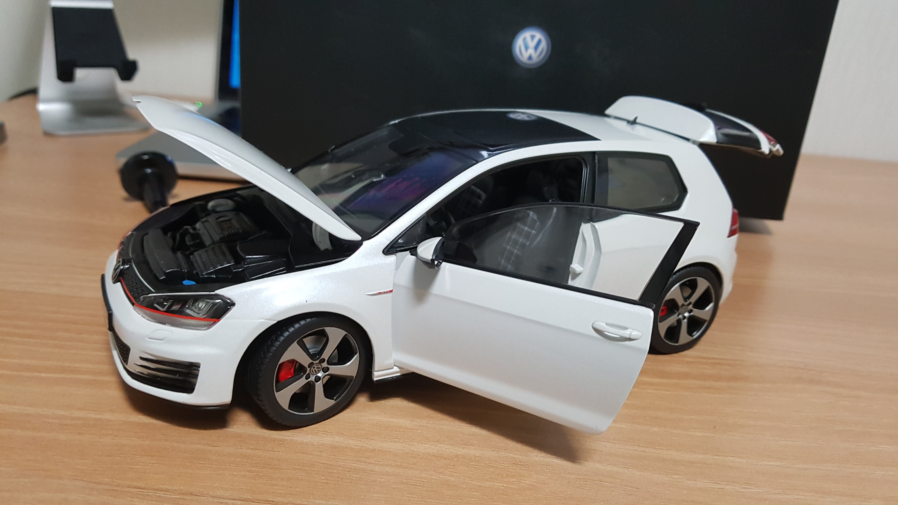
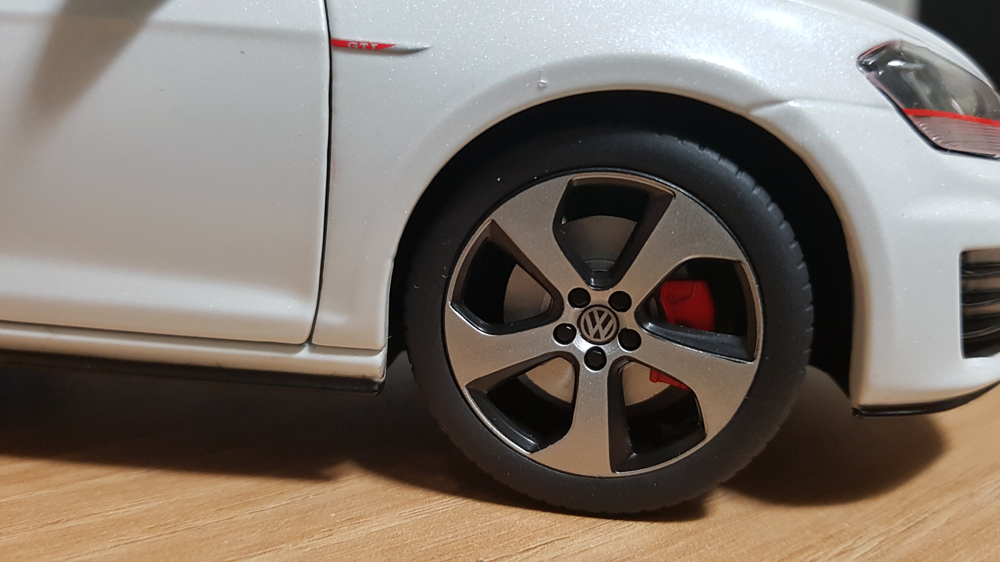

폭스바겐 골프 7세대 다이캐스트 1:18 가 회사로 도착했다.
원래는 1:43 비율의 6세대 모델을 찾고 있었는데 퀄리티가 좋은 모델을 찾기도 어렵고, 찾다보니 7세대가 있어서 바로 구매했다.

7세대 3도어 GTI 모델, 진짜 차도 아닌데 설레이네…

일은 잠시 접어두고 바로 오픈, 이렇게만 보면 진짜 같다. 난 분명 6세대를 좋아하는데 7세대를 가지고 싶은 마음이 자꾸 생기네.. (바로 꺼내 볼랬는데 드라이버가 없으면 꺼내 볼 수 없어서 집으로 가져가서 열어보기로 함.)

측면, 퀄리티가 꽤 좋다.

정면, 역시나 퀄리티가 좋다.

다이캐스트라 그런지 디테일이 장난감 수준이 아니다.
본네트 열릴 때 소름 돋았는데 엔진룸 내부 냉각수 캡, 엔진 덮개등 디테일이 아주 좋다.
대시보드쪽 디테일도 꽤나 그럴 듯 하고 트렁크, 운전석 조수석 문 열림도 아주 만족 스럽다.

휠, 디스크, 캘리퍼 색상까지 완벽하다.
영상에서 보듯이 서스펜션까지 구현되어 있고 실제로 운전석 핸들을 통해 조향도 가능하다. 그리고 디스크와 캘리퍼는 실제 차량처럼 움직이지 않고 휠만 따로 움직이도록 되어있다.
6세대로 구했더라면 더 좋았을 것 같은데 7세대도 충분히 이쁘고 만족스럽다.
근데 하나 구입하니까 1세대부터 모든 다이캐스트를 다 구하고 싶네..
기록 끝.